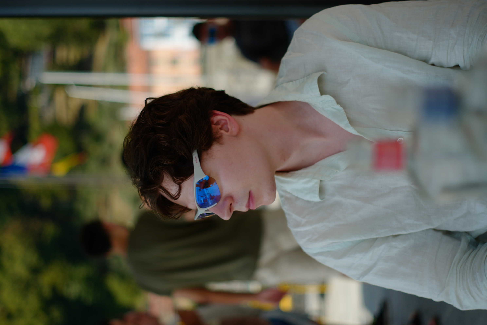

I grew up in a small town in Germany, where young people have few opportunities and many leave. I wanted to build a future rather than watch the town fade, and that pushed me to look further.
Growing up on anime, I fell in love with Japanese culture and history. Living in Japan and one day contributing something back has been a dream for a long time. Game development is where my technical skills and creativity meet, so that is the path I’m building.
In 2023 I made the move to Japan.
Where I studied and worked, in order. The details are in the sections below.
Game development. Graduating in 2028.
Studied Japanese and completed the course at Japanese Level N2.
Left Germany to build my future in Japan.
Worked independently in Germany for about six years and grew my YouTube music channel to 15k subscribers.
Began university studies at Ostbayerische Technische Hochschule Regensburg.
Finished school with the Abitur, after Grundschule and Realschule in Germany.

I’m not only about the technical side. My brother is an artist, and since I was a child he has taught me 3D software, photography and editing. Because of him I care not just about making things work, but about making them look beautiful.
I work across systems, design and visuals, and I like owning every part of what I make.

Before games, I worked as a freelance composer in Germany for more than 6 years, from 2017 to 2023. I shared my music on YouTube and grew the channel to 15k subscribers.
In 2026 I started Instagram, reaching 3k followers and one video with 4M+ views.
Subscribers on my music channel.
Followers, and my biggest video passed 4 million views.
After moving to Japan in 2023, I enrolled at Kai Language School and studied Japanese for two years, finishing at Level N2 in 2025.
It opened the door to the next step: entering a Japanese technical college.
Since 2025 I’ve been studying game development at TECH.C., with graduation planned for 2028.
Ideas are easy. Building them, solving the problems and finishing them is the hard part. I make games to practice exactly that: taking an idea all the way to something people can actually play, and making it fun and memorable for others, not just for me.
Every project teaches me at least one new thing.

AI can now do much of what people used to do by hand, so I don’t want to rely on technical skill alone. I invest in a wider range of abilities, and in creativity: the ability to make things that are well made and look beautiful.
Without a creative direction, much of today’s AI-made work ends up looking alike. I want to bring my own ideas and personality, so what I make feels like a person made it.

Making things look good isn’t only about the right tools. It’s about judgment, and that’s what I’m training.

I practice what my teachers show me and put it straight into my own projects.
When something in class interests me, I keep going until I know how to use it in real work.
I study games, films and art to understand why something looks good and what decisions were made, not to copy it.
I want to learn how professional teams work, then start my own company and create things that many people love, while contributing something to Japan, where I have long wanted to live.
I don’t think of myself as one job title. I’m a creator first, and I want to make things only I could make.
Let’s build something together